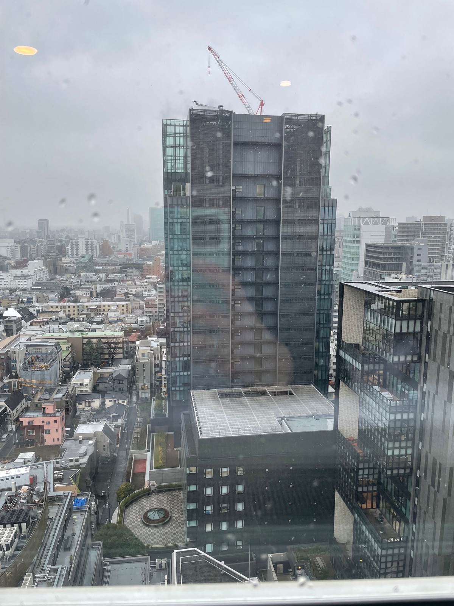
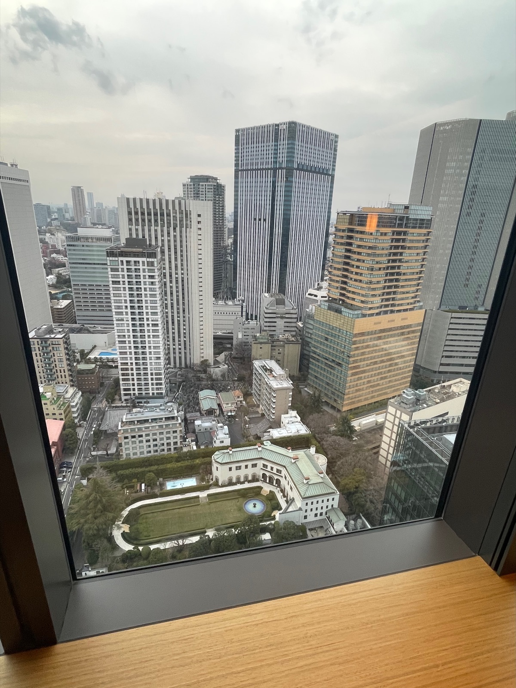
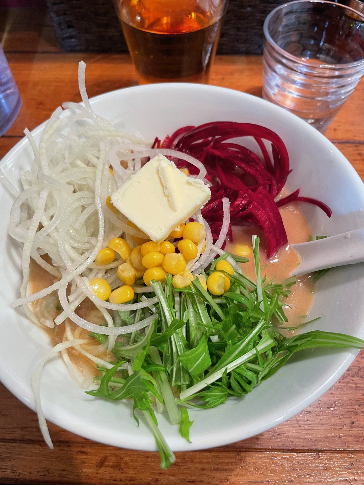
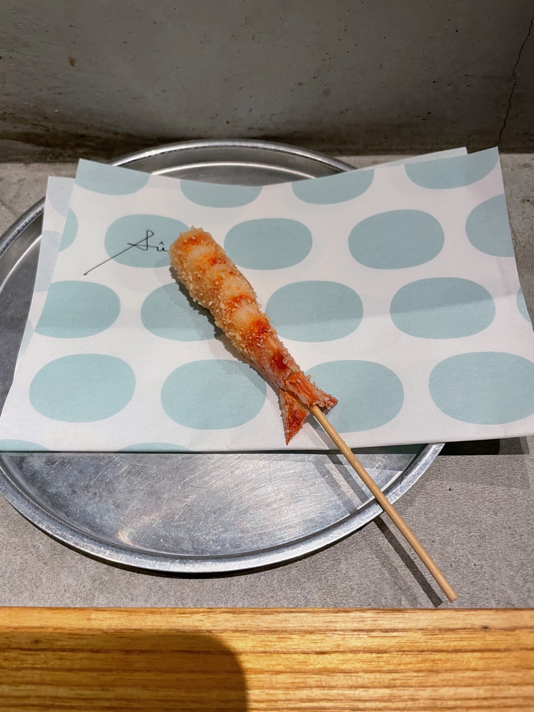
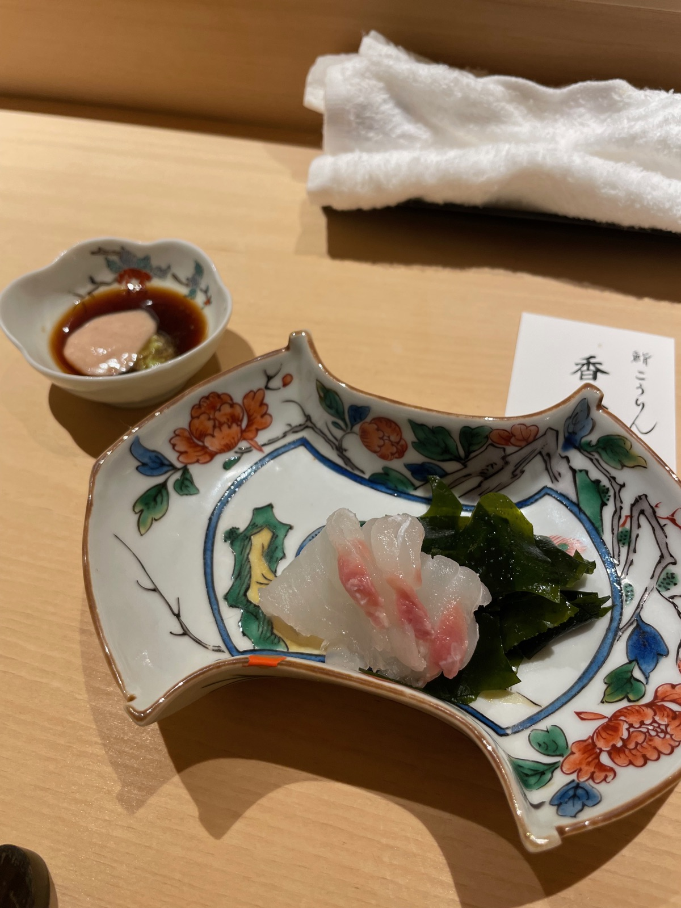
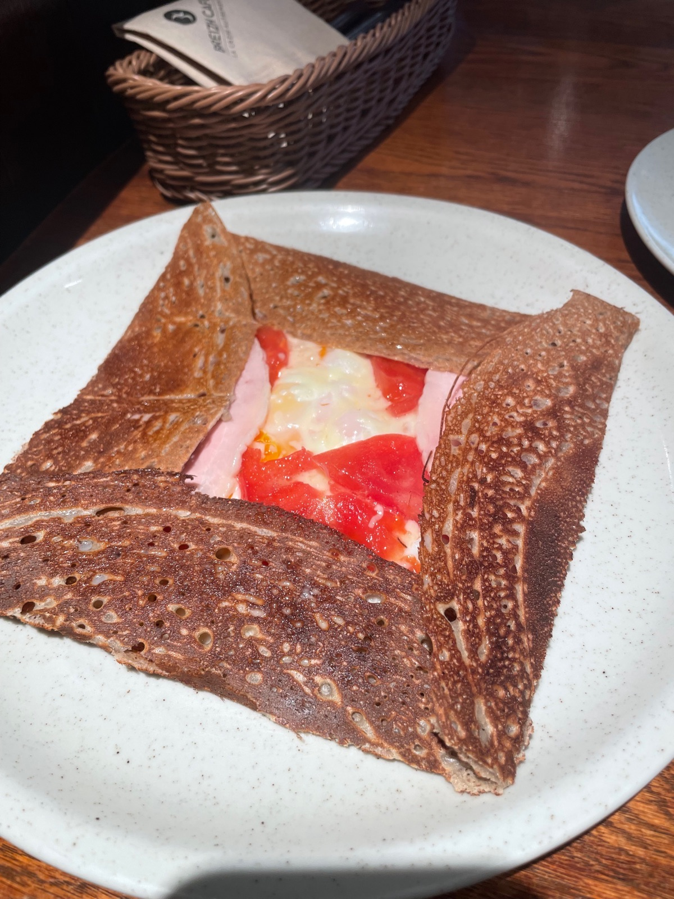
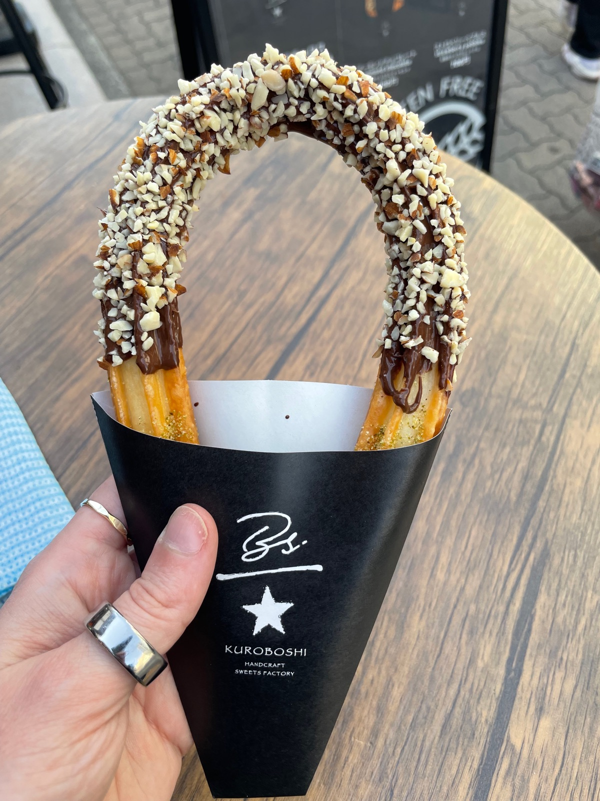
The Yamanote Line loops around central Tokyo, connecting major hubs like Shibuya, Shinjuku, Tokyo Station, and Ueno. Your most-used line.
13 subway lines cover every corner of central Tokyo. Google Maps is essential for navigating transfers between Tokyo Metro and Toei lines.
IC cards that work on all trains, buses, and at convenience stores. Load at any station kiosk. Tap on, tap off — no tickets needed.
Tokyo neighborhoods are incredibly walkable. Most attractions within a district are within 10–20 minutes on foot. Station corridors can be long though.
Tokyo's oldest temple, dating to 645 AD. The iconic Kaminarimon (Thunder Gate) and Nakamise shopping street leading to the main hall are unmissable.
The primary residence of the Emperor of Japan, surrounded by moats and beautiful gardens. The East Gardens are free to visit.
Serene Shinto shrine set in 170 acres of forest, dedicated to Emperor Meiji. Walk through the towering torii gate and see the consecrated sake barrels.
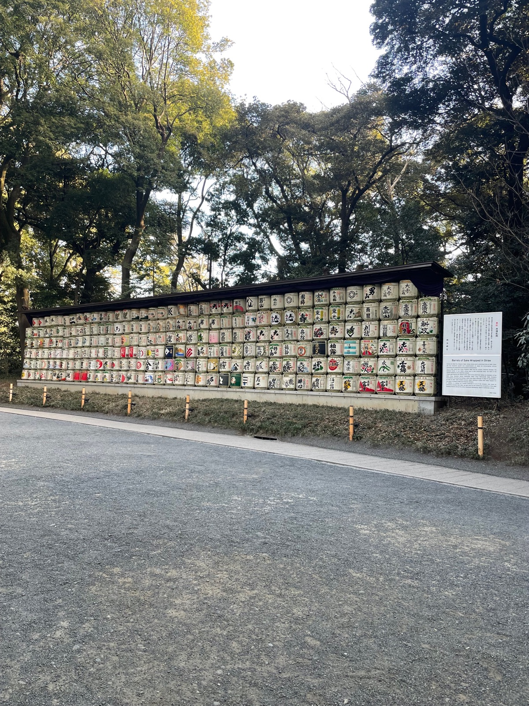
The "lucky cat temple" — filled with thousands of maneki-neko (beckoning cat) figurines. A peaceful, less-touristy spot.
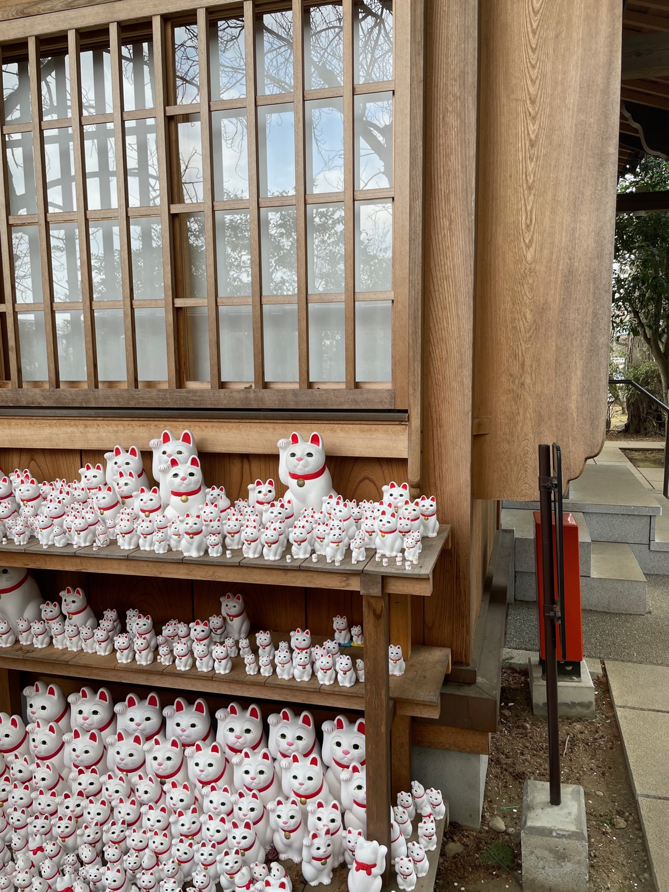
The world's busiest pedestrian crossing. Watch from the Starbucks above or just dive in. Best at night when the neon lights up.
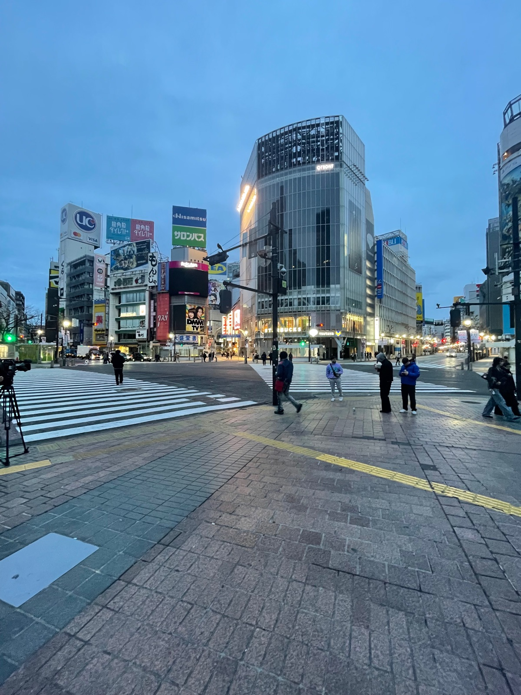
The famous statue of the loyal Akita dog who waited for his owner at Shibuya Station every day. A beloved meeting spot.
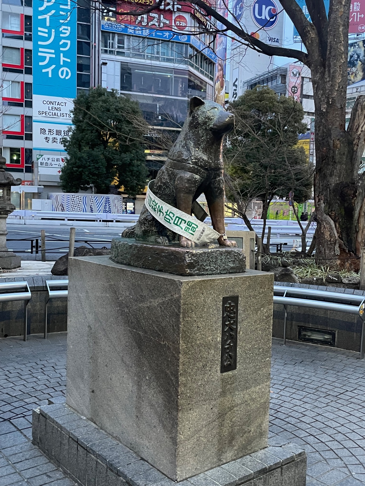
The original fish market's outer market still thrives with fresh seafood stalls, street food, and kitchen supply shops. Great for sashimi on the go.
At 634m, Japan's tallest structure. The observation decks at 350m and 450m offer stunning city panoramas.
The 333m Eiffel-inspired tower, completed in 1958. Still iconic — especially beautiful lit up in orange at night.
The beating heart of Tokyo's youth culture. Shibuya has the famous scramble crossing and buzzing nightlife; Harajuku has Takeshita Street's quirky fashion and Meiji Shrine's peaceful forests. Several GF spots here including T's Kitchen and NachuRa.
Tokyo's answer to the Champs-Élysées. Tree-lined Omotesando boulevard is flanked by luxury boutiques and stunning architecture. Great café culture — BREIZH Café and Rizlabo Kitchen are both here.
Old Tokyo at its finest. Sensō-ji Temple, traditional shopping streets, and the Sky Tree dominating the skyline. Shochikuen Cafe is a great GF find in this area — fully vegan and GF with an incredible rainbow cake.
Tokyo's upscale shopping and business district. Department stores, high-end dining, and Tokyo Station's beautiful redbrick facade. FANCL BROWN RICE MEALS and Soranoiro ramen are nearby.
Known for its international dining scene and nightlife. Home to Sushi Korin (the GF omakase gem) and Kushiage Su. Mori Art Museum and Tokyo Tower are nearby.
A mix of government buildings, hotels, and excellent restaurants. Itamae Sushi Hanare and Cafe Komaya are here. Close to the Imperial Palace gardens.
Tokyo's busiest station area with towering skyscrapers, department stores, and the neon-lit Kabukichō entertainment district. A major transit hub for day trips.
Hands-on sushi making experience in Asakusa. Learn from a professional chef and eat your creations. #1 rated cooking class in Japan.
Book ExperienceCustomize your own cup of instant noodles (not GF, but fun). Interactive exhibits on the history of instant ramen. Also has a location in Osaka.
Sake brewery offering tours and tastings. Sake is naturally gluten-free — a safe bet for celiac travelers looking for local drinks.
Immersive digital art museum where rooms of light, color, and projection flow into each other. Book tickets in advance — they sell out.
Book TicketsWalk barefoot through water and immersive installations. A more physical, sensory experience than Borderless.
Book Tickets